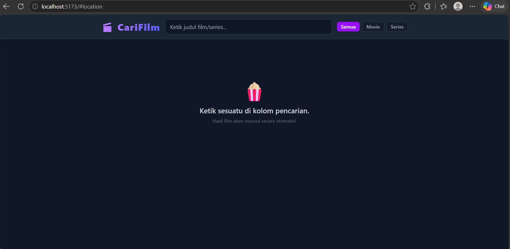
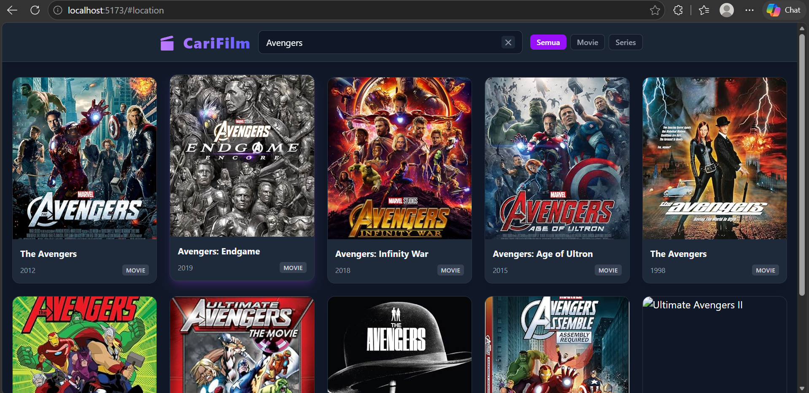
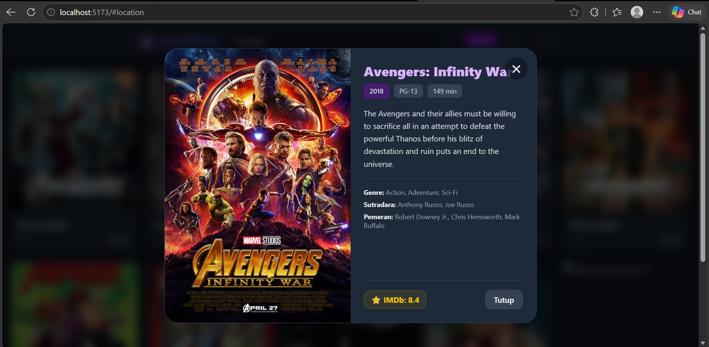

Search Movie
Website pencarian film yang saya buat menggunakan React, Tailwind CSS, dan IMDb API.
Tentang Project
Search Movie merupakan website yang dibuat untuk mencari dan menampilkan informasi mengenai film menggunakan data dari IMDb API.
Pengguna dapat mencari film berdasarkan judul kemudian melihat hasil pencarian beserta informasi film yang tersedia.
Teknologi
Search Movie
Tampilan aplikasi pencarian film untuk mencari dan melihat informasi film menggunakan IMDb API.

Homepage
Halaman utama aplikasi pencarian film.

Search Result
Menampilkan hasil film berdasarkan pencarian pengguna.

Movie Detail
Menampilkan informasi detail mengenai film yang dipilih.
Features
Beberapa fitur yang terdapat pada aplikasi Search Movie.
Movie Search
Pengguna dapat mencari film berdasarkan judul menggunakan IMDb API.
IMDb API
Mengambil data film dari API dan menampilkannya secara dinamis pada website.
Movie Information
Menampilkan informasi seperti judul, poster, tahun, dan informasi film lainnya.